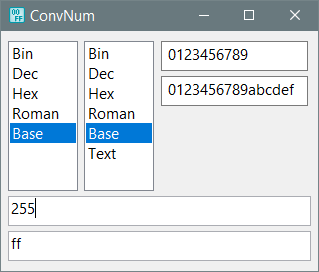

PureBasic
Converting_numbers
Назначение
Конвертирует числа из одной системы счисления в другую.

Взаимосвязанные
Converting_numbersДля наилучшего использования площади экрана списки конвертирования сделаны узкими, а поля вводимых чисел максимально широкими, причём разворачивание окна делает нижнее поле широким, чтобы полностью отображать результат без прокрутки или копирования содержимого в другой редактор.
Поля не подписаны, так как очевидно, что исходный слева или сверху, назначение справа или снизу.
Выбрав направление можно вводить данные (числа). Преобразование происходит автоматически при вводе (изменении содержимого поля) или при смене системы счисления. При преобразовании происходит также проверки на валидность числа, соответствия допустимых символов, например в двоичной системе счисления допустимыми считаются только 0 и 1. Так как числа преобразуются внутренними функциями с типом Quad, то есть четверное слово, то есть ограничение на максимальное число для двоичного представления это 63 символа (64-й является знаком "+" или "-"), соответственно максимальное десятичное число 9223372036854775807, шестнадцатеричное - 7FFFFFFFFFFFFFFF. Проверяется только ширина числа 16 и 19 символов, поэтому на границах диапазона нужно самостоятельно контролировать числа. Чтобы избежать этих ограничений необходимо использовать Base в обоих списках и задать набор используемых символов, например, для десятичной системы это цифры от 0 до 9, а для шестнадцатеричной ещё добавляются буквы от A до F, для двоичной "01", для восьмеричной от 0 до 7, либо задать собственный набор с любыми символами хоть все буквы алфавита.
Полезная вещь - преобразование в противоположную сторону, с учётом того, в каком поле происходит набор числа, например между Bin и Hex, ввод 1111 выдаёт "F", добавление "F" добавляет 1111. Попробуйте вводить любой шестнадцатеричный символ многократно и он добавляет те же 4 двоичных символа. Это наглядно показывает как происходит изменение числа. Так как для десятеричной системы это кратно 2, попробуйте числа 2, 4, 8, 16 и т.д., а также их суммы 16+4, 8+64 и т.д. это покажет как включаются флаги в позициях бинарного числа, что позволяет понять флаги в функциях используемые в виде десятеричных чисел, на самом деле они включают флаг в позиции двоичного числа и позволяют использовать число как набор нескольких флагов используя каждый бит. Если тип Quad имеет ширину 64 бита, то может передавать 64 битовых флага.
Этот режим позволяет создавать собственные системы счисления. В этом режиме становятся доступными поля для ввода набора символов. Этот функционал использует возможности работы с большими числами, то есть выполняет математические операции не с помощью арифметического процессора, а с помощью алгоритма как это выполняет человек на листочке, например перемножение столбиком, то есть по частям вычисляя каждую часть в арифметическим процессором. Это медленнее, но только в представлении арифметических операций компьютера, а в представлении человека это мгновенно.
В этом режиме расчёты выполняются в одну сторону с типом Quad, поэтому действует ограничение указанное ранее на максимальное число. Этот режим в основном актуален для десятичных чисел, поэтому в остальных режимах выдаёт эквивалент десятичного представления числа.
Режим римских чисел имеет естественное ограничение - максимальное число 3999, поэтому этому режиму не нужен Base, да и не возможен. Также здесь проверяется недопустимость повтора символов VLD и недопустимость 4-х кратного повтора символов IXCM, так как это записывается методом отнимания, например 9 как IX, а не VIIII.